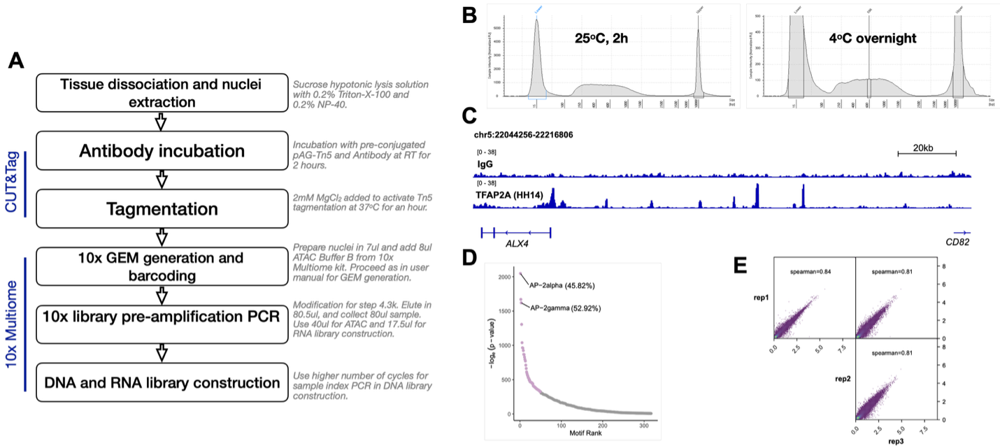
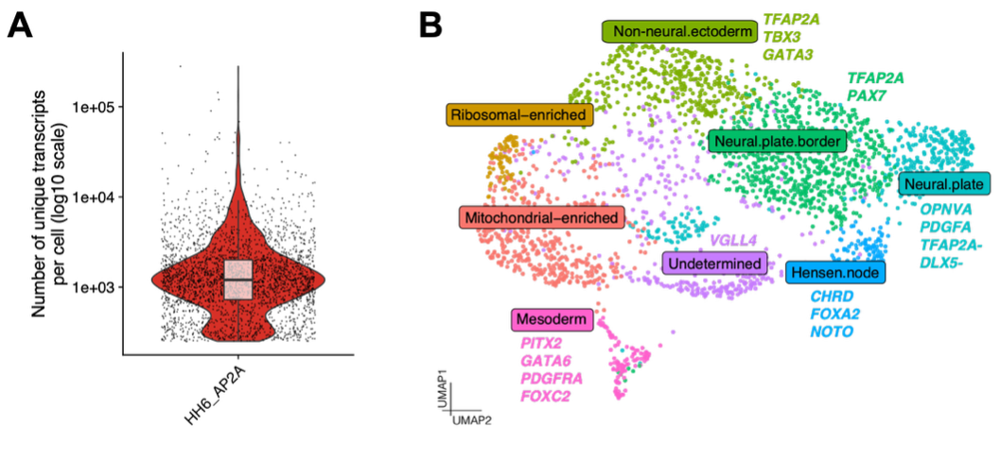
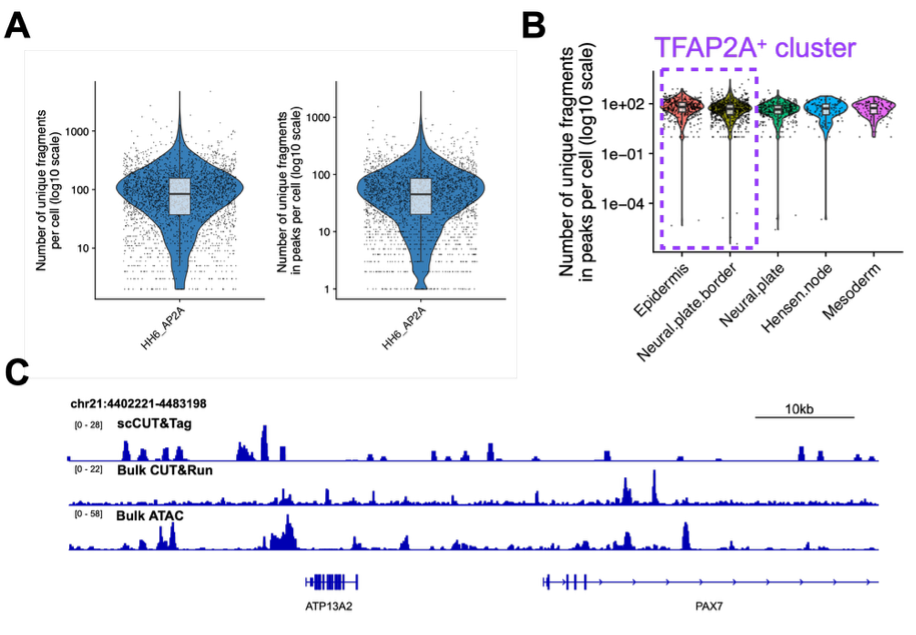

A multiomic approach to map transcription factor binding in early neural development
Complex gene regulatory networks govern cell fate specification, differentiation, and cellular reprogramming, through the interplay of transcription factors, chromatin organizers, and cis-regulatory elements. Most transcription factors are versatile, acting across multiple lineages, and cis-regulatory elements typically respond only to a specific combination of them. While it has long been appreciated that a factor's binding and function depend on the context in which it acts, studying context-specific function is often limited by the need to isolate enough cells of identical state before their genomic binding profiles can be measured. Cleavage Under Targets and Release Using Nuclease (CUT&RUN) and Cleavage Under Targets and Tagmentation (CUT&Tag) have relaxed this constraint considerably, enabling genome-wide profiling of protein–DNA interactions from orders of magnitude fewer cells than ChIP-based methods. The constraint has not disappeared, though: the population must still be defined and purified in advance. In a developing tissue, where states are continuous and rarely separable by markers, occupancy and cell state have to be read from the same nucleus instead.
For a transcription factor, this is harder than for a histone modification, and the obstacle is molecular rather than technical: the target epitope is present in far fewer copies per nucleus, and recoverable molecules fall with it. We adapted CUT&Tag to the 10x Genomics Multiome platform in the chick embryo, and report here the working components of that adaptation, the yield and specificity our pilot currently achieves, and what those numbers imply about the scale such experiments require.
To investigate early neural induction, we selected the chick embryo at Hamburger–Hamilton stage 6 (HH6; head-fold stage), during which the ectoderm begins to diversify into the neural plate, neural plate border, preplacodal ectoderm, neural crest progenitors, and non-neural ectoderm. The chick embryo provides excellent experimental accessibility, allowing embryos to be collected reproducibly at precisely defined developmental stages. As a proof of principle, we focused on the transcription factor TFAP2A, which exhibits dynamic and cell type-specific expression during early ectodermal patterning. At HH6, TFAP2A is prominently expressed in the neural plate border and non-neural ectoderm, where it plays key roles in neural crest and placodal development while remaining absent or expressed at substantially lower levels in the neural plate. These well-defined expression domains make TFAP2A an ideal candidate for evaluating the ability of our approach to resolve protein-DNA interactions together with transcriptional states at single-cell resolution.
We therefore set out to incorporate CUT&Tag into the 10x Genomics Multiome assay in the developing chick embryo (Figure 1A). Several components of the adaptation are now established. First, the TFAP2A antibody performed well in bulk CUT&Tag experiments. Our protocol is based on published protocol1, with slight modifications. We preconjugated the TFAP2A antibody with adapter-loaded proteinAG-Tn5 fusion (Epicypher CUTANA™ 15-1017) before incubating with nuclei. We evaluated our results based on tapestation profiles and bulk sequencing (Figure 1B). When we compare our binding profiles to a non-specific antibody IgG control, we observe significant binding peaks for TFAP2A CUT&Tag and the resulting peaks were enriched for with TFAP2A binding motifs with HOMER motif enrichment analysis (Figure 1C & 1D). It performs consistently (Spearman correlation: 0.81-0.84) across independent experiments (Figure 1E).

Second, CUTANA pAG-Tn5 carries adapters compatible with 10x chemistry, which allows the standard 10x transposition step to be omitted entirely, and we confirm that CUT&Tag fragments generated in situ are recovered and barcoded within Multiome GEMs. Third, gene expression of collected sample retained sufficient complexity to resolve distinct cell populations across HH6 embryos (Figure 2).

However, key aspects of the approach remain to be optimized. In our single-cell pilot, we recovered approximately 100 unique fragments per nucleus, an order of magnitude below the projected 1,000 (Figure 3A). We considered two non-exclusive explanations for this sparsity. First, our projection was based on a Paired-Tag H3K27ac experiment2, and that baseline could be too generous. It was derived with the premise that transcription transactivator binding sites will be a subset of H3K27ac-marked chromatin, a comparison that counts genomic territory rather than recoverable molecules. However, per nucleus, a histone mark presents several tagmentable nucleosomes at every active element, while TFAP2A binds DNA as a dimer, contributing two epitopes per site and only a fraction of the time. Transient occupancy and copy number difference per element may together be sufficient to explain the tenfold lower yield. Alternatively, recovery of transposed fragments in the pilot might be genuinely poor. The two are not mutually exclusive and separating them is a current priority.
Independently of yield, the recovered fragments carry signatures of non-specific capture. In our pilot single-cell experiment, clusters that do not express TFAP2A yield comparable fragment numbers to those that do (Figure 3B). When analyzing the whole pilot dataset as pseudobulk, the fragments are not concentrated at binding sites defined in our bulk TFAP2A CUT&Run experiments with little to no enrichment of the TFAP2A motif (Figure 3C). While these observations match the presence of prominent background signal, the genomic distribution of captured fragments is structured rather than uniform but does not match a conventional accessibility profile either.

In summary, our pilot experiments have provided valuable insight into the technical requirements and limitations of the approach, guiding subsequent protocol refinement. Upon successful implementation, simultaneous profiling of TFAP2A occupancy and gene expression at single-cell resolution will enable direct investigation of the gene regulatory networks underlying neural induction. Furthermore, the optimized workflow is expected to be adaptable to additional transcription factors, providing a versatile platform for studying transcriptional regulation during embryonic development. The experimental framework and biological findings developed through this project will be submitted for future publications.
Acknowledgements: We thank lab members – Nagif Alata Jimenez and Tatiane Kanno for helping with embryos dissection and sample collection for the 10x Multiome experiment. We also thank CDN for the support.
References
- Kaya-Okur, H.S., Wu, S.J., Codomo, C.A., Pledger, E.S., Bryson, T.D., Henikoff, J.G., Ahmad, K., and Henikoff, S. (2019). CUT&Tag for efficient epigenomic profiling of small samples and single cells. Nat Commun 10, 1930. 10.1038/s41467-019-09982-5.
- Xie, Y., Zhu, C., Wang, Z., Tastemel, M., Chang, L., Li, Y.E., and Ren, B. (2023). Droplet-based single-cell joint profiling of histone modifications and transcriptomes. Nat Struct Mol Biol 30, 1428-1433. 10.1038/s41594-023-01060-1.